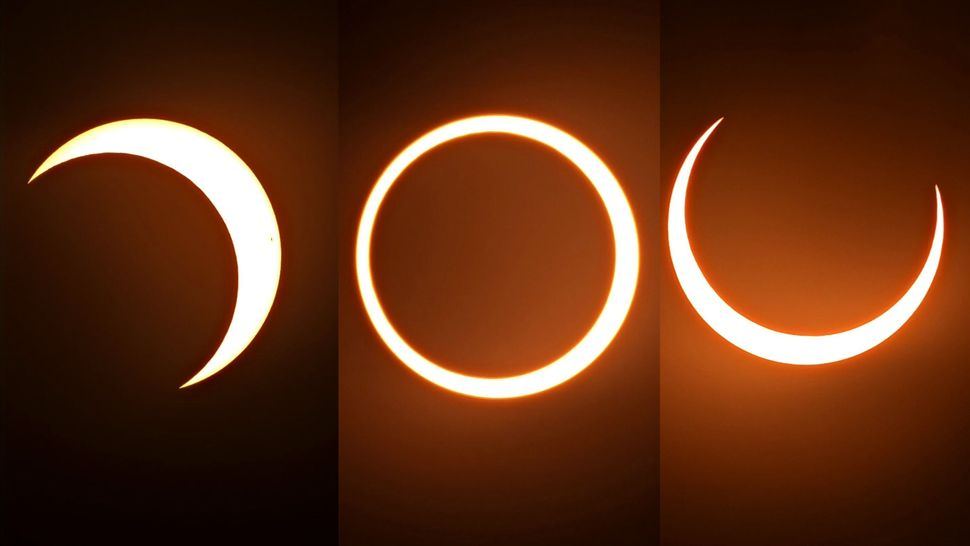
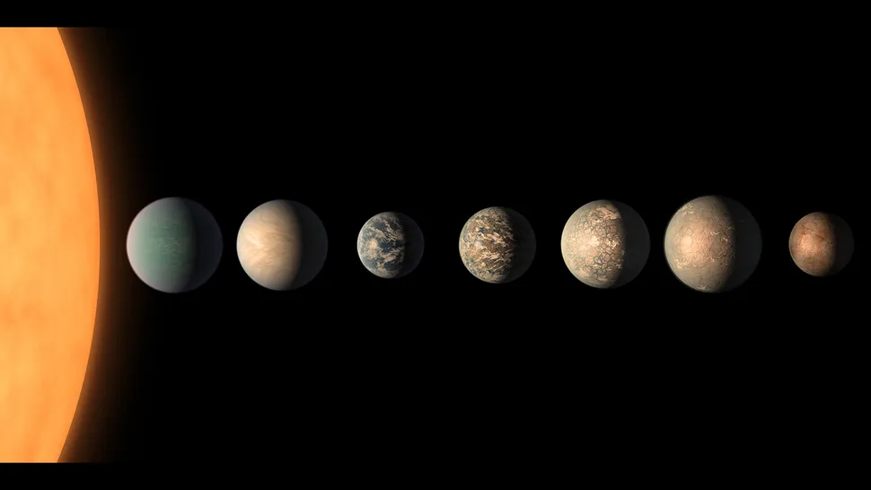
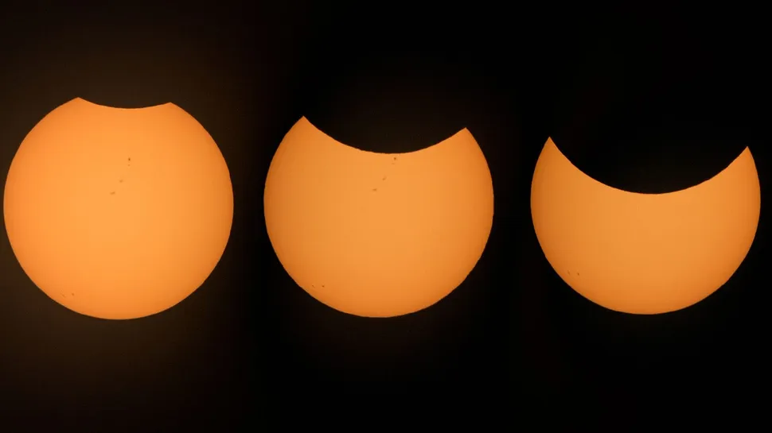
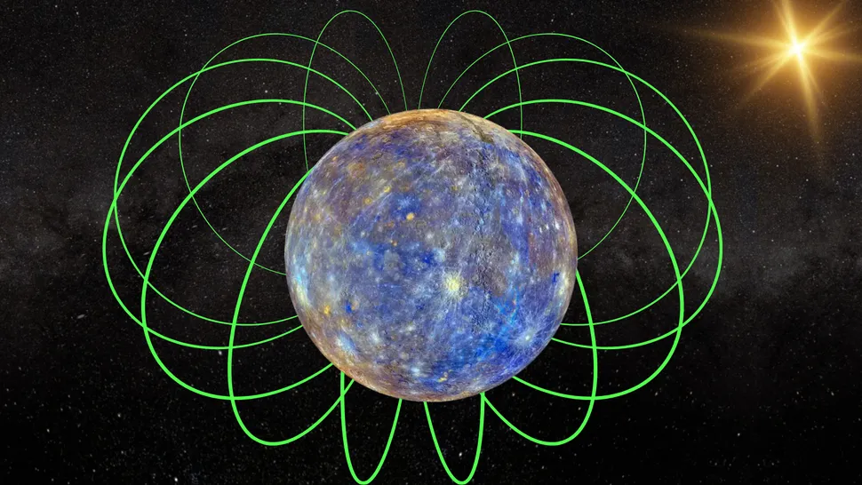

Curiosity Mars rover's wheels are more battered than ever — but they still work

As fun as it would be to visit Mars, we wouldn't necessarily want to walk a mile in the Curiosity rover's shoes — or rather, its wheels. After landing in Mars' Gale Crater in 2012 and traveling some 20 miles (32 kilometers) over the rocky Martian landscape, the robotic explorer's six wheels are looking a little worse for wear.
The latest wheel photo, taken by Curiosity's Mars Hand Lens Imager (MAHLI) on Sept. 22 shows quite a bit of damage — some of which appears to be new — from smaller dents and punctures to major tears and gashes.
But before you panic, let us allay your fears. Curiosity's wheels have been damaged for more than a decade, and the rover is trucking along. "The image shows the MAHLI view of the right-middle (RM) wheel, which is still holding up well despite taking some of the worst abuse from Mars," Ashley Stroupe, Mission Operations Engineer at NASA's Jet Propulsion Laboratory (JPL), said in a statement.
At one point, the team steered Curiosity away from more treacherous terrain in favor of smoother paths to prolong the lifespan of its wheels. Then, in 2017, JPL engineers uploaded new software to Curiosity that uses an algorithm to alter each wheel's speed to reduce pressure from the rocks beneath its grousers, or treads.
While wheel damage still occurs regularly, as this new image shows, Curiosity is plodding across the tough terrain just fine, continuing its mission to search for evidence that Mars might have once been habitable for microbial life.
A "ring of fire" burns over Easter island in a solar eclipse.

Thursday, October 3, 2024: The sun and moon align in the sky over Easter Island, or Rapa Nui, in this stunning collage of annular solar eclipse of Oct. 2, 2024 as photographed by eclipse chaser Jamie.
"Well, that was incredible. The tension! A cloud left the sun just 10 seconds before the Baily's beads appeared, and another appeared a minute after the ring ended. We were so lucky," Carter told Space.com.
The Ring of Fire (also known as the Pacific Ring of Fire, the Rim of Fire, the Girdle of Fire or the Circum-Pacific belt)[note 1] is a tectonic belt of volcanoes and earthquakes.
It is about 40,000 km (25,000 mi) long[1] and up to about 500 km (310 mi) wide,[2] and surrounds most of the Pacific Ocean.
The Ring of Fire contains between 750 and 915 active or dormant volcanoes, around two-thirds of the world total.[3][4] The exact number of volcanoes within the Ring of Fire depends on which regions are included.
"It felt incredible to actually see the ring, knowing I had no more than a 50-50 chance. It was so cold in the minutes before annularity," Carter added.
These images show the initial partial phase, "ring of fire" peak and exit partiality during the hours long eclipse from Carter's position on Easter Island in the remote Pacific Ocean. Check out more amazing eclipse photos!
Mass extinctions on Earth can help us find alien life in the cosmos.

Throughout its 4.5 billion-year history, Earth has endured numerous mass extinctions, each of which has wiped out more than three-quarters of the planet's species and greatly reduced its biodiversity. These contractions in Earth's overall biodiversity can be triggered by both nonliving processes, such as volcanic eruptions or asteroid collisions, and living processes, such as organisms' altering of Earth's atmospheric chemistry.
Yet life often bounces back. In fact, in the long term, life on Earth has trended toward increasingly complex forms and ecological organization in spite of these somewhat regular setbacks.
Periods of stress and their resulting mass extinctions pose an existential threat to life as a whole on the planet. However, in a paper published to the preprint database arXiv in May, researchers make the case that, in the long run, drastic alterations in Earth's environment create opportunities for evolutionary exploration and tend to enable more biodiversification and populous, stable states among surviving species, compared with more tranquil periods. On scales of tens of millions to hundreds of millions of years, life as a whole may actually become more resilient because of these events, the authors propose.
"These events can either be a catastrophe or the best thing that has happened to our planet, depending on what point of view you are taking," Arwen Nicholson, a planetary scientist at the University of Exeter in the U.K. and co-author of the paper, told Space.com.
Can you see Earth's new 'mini-moon' with the naked eye?

The clingy space rock is actually a near-Earth asteroid named 2024 PT5, which measures an estimated 33 feet (10 meters) wide, or about the length of a school bus. Snagged by Earth's gravity during an unusually close approach, this "mini-moon" is predicted to orbit our planet for just 57 days; on Nov. 25, the asteroid will break free of Earth's influence and resume its regular orbit of the sun without a chaperone, astronomers wrote in the journal Research Notes of the AAS.
While the idea of a "second moon" may sound surreal and exciting, 2024 PT5 will be a mostly invisible travel companion. Measuring at least 300,000 times smaller than our permanent moon, the new minimoon is far too tiny to be visible to the naked eye — and commercial backyard telescopes and stargazing binoculars won't help much, either.
"The object is too small and dim for typical amateur telescopes and binoculars," study author Carlos de la Fuente Marcos, a professor at Universidad Complutense de Madrid, told Space.com. "However, the object is well within the brightness range of typical telescopes used by professional astronomers."
That means the only way to see Earth's new moonlet will be to wait for researchers at a professional observatory to release images of it. (However, in the meantime, you can look for the bright comet that will be visible in the morning sky until Wednesday, Oct. 2. Here's everything you need to know to spot Comet C/2023 A3 Tsuchinshan-ATLAS.)
When is the next solar eclipse?

On Oct. 2, an annular solar eclipse was visible from areas in the Southern Hemisphere, including in remote parts of Chile and Argentina. This type of eclipse occurs when the moon passes between Earth and the sun, but does not completely cover the sun's disk because it is at its farthest point from Earth. Therefore, the moon appears smaller than the sun, creating what looks like a "ring of fire" around the moon when viewed from Earth.
Similarly, the next solar eclipse will also only block part of the sun. On March 29, 2025 a partial solar eclipse will be visible in areas of Europe, Asia, Africa, North America, South America and the Atlantic and Arctic Oceans, according to NASA.
We experience different types of eclipses based on the alignment and position of the sun, moon and Earth. A partial solar eclipse occurs when the moon passes between the sun and Earth, but the trio are not perfectly lined up (like they are during a total solar eclipse), allowing sunlight to peak out from behind the face of the moon.
A partial solar eclipse can also be seen by viewers located outside the path within which the moon's shadow completely falls during a total or annular solar eclipse. When only part of the sun is covered by the moon, it creates a crescent shape seen by viewers on Earth.
The partial solar eclipse on March 29, 2025 begins at 4:50 a.m. EDT (0850 GMT) and ends at 8:43 a.m. EDT (1243 GMT). It will reach its maximum phase at 6:47 a.m. EDT (1047 GMT), with a sliver of the sun peaking out from behind the moon, according to TimeandDate.com, where you can also find a full list of locations within the path of the eclipse's shadow.
Get the Space.com Newsletter
BepiColombo spacecraft's flyby of Mercury begins unraveling the planet's magnetic mystery

The BepiColombo spacecraft may have only made rapid flybys of Mercury, but it is already helping to unravel mysteries surrounding the closest planet to the sun.
In 2026, a European Space Agency (ESA)/Japan Aerospace Agency (JAXA) joint mission will fall into orbit around Mercury, the solar system's smallest planet. However, to do that, the spacecraft first needs to make several flybys of Mercury, Venus and Earth. Fortunately, these flybys are proving invaluable to science.
During a June 2023 flyby of Mercury, BepiColombo encountered several characteristics of the planet's magnetic field. This field forms a protective magnetic bubble around Mercury and guards the planet against charged particles in the solar wind similar to how Earth's magnetosphere shields our planet — but scientists are curious as to why this tiny inner planet's magnetic field is much weaker than ours.
Because Mercury is much closer to the sun than Earth is — Mercury is average distance of 36 million miles (58 million kilometers) away from the sun while Earth is about 93 million miles (150 million km) away — its magnetic bubble experiences a far more intense pummeling from the solar wind.
One of BepiColombo's main tasks will be to investigate this interaction and the properties of Mercury's magnetic field. The spacecraft will build a dynamic dual-picture of the space environment around Mercury by separating into different units: the ESA-controlled Mercury Planetary Orbiter (MPO) and the JAXA-led Mercury Magnetospheric Orbiter (MMO).
Rapid flybys of Mercury are helping scientists establish the final orbit of BepiColombo, but these passes have also granted operators tantalizing hints at the sort of science the mission will deliver when truly in place. The six planned flybys are also providing glimpses of Mercury that wouldn't be possible from orbit.